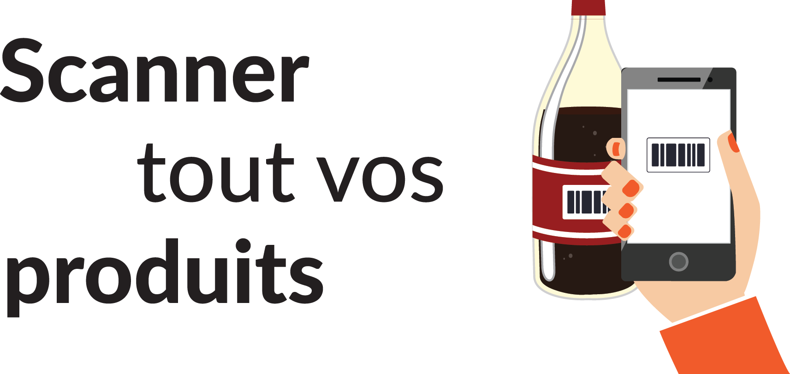

<ion-view title="Scanner" hide-nav-bar="true" id="page1" class=" ">
    <link rel="stylesheet" href="../stylesheets/scanner.css" />
    <ion-content padding="true" class="manual-ios-statusbar-padding" scroll="false">
        <div id="scanner-heading2">
            
        </div>
        <div id="explanation">
            
        </div>
        <div style="margin: 0px; line-height: 250px; background-color: rgb(232, 235, 239); text-align: center;">
            <i class="icon ion-image" style="font-size: 64px; color: rgb(136, 136, 136); vertical-align: middle;"></i>
        </div>
        <div id="scan-zone">
            
        </div>
        <!--<button id="scanner-button4" class=" button button-positive  button-block icon ion-ios-camera-outline" ng-click="scan()"> Scan</button>-->
    </ion-content>
</ion-view>